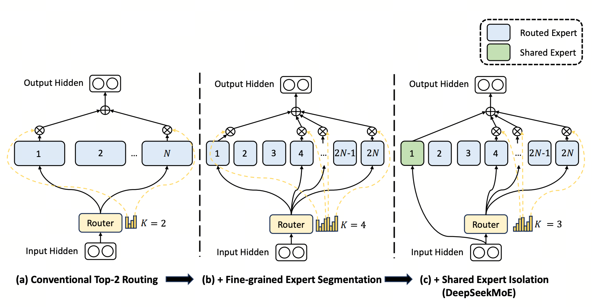

DeepSeekMoE 与 MTP — V3 留下的两件遗产
DeepSeekMoE 与 Multi-Token Prediction 仍是 V4 的脊梁；V4 同时调整了路由打分、负载均衡、节点约束和早层路由等细节。
DeepSeekMoE + MTP = V3 留给 V4 的两根脊梁
前者提供 FFN 层的稀疏激活骨架，后者增加未来 token 的辅助预测目标。V4 沿用两者的主体设计，并调整了若干 MoE 与 MTP 配置；报告没有把每项调整都归因于 384 专家或 1M 上下文。
- MoE（Mixture-of-Experts，专家混合）
- 把单个 dense FFN 拆成 $N$ 个并行专家，每个 token 由路由器 (router) 打分选 top-$k$ 个专家激活。总参数大、激活参数小 —— 模型容量上去但单步算力没涨。
- DeepSeekMoE（Dai 2024）
- DeepSeek V2/V3 时代定下的 MoE 三件套：① 细粒度专家（256 个小专家替代 8 个大专家）+ ② 共享专家（1 个 always-active 专家承通用能力）+ ③ aux-loss-free 负载均衡（不靠 loss 项，靠每个专家的动态偏置 $b_i$ 调节）。
- aux-loss-free 负载均衡
- 传统 MoE 在 loss 里加一项"惩罚不均衡"，会和主任务竞争。V3 改成给每个专家维护一个偏置 $b_i$，根据"被分配到的 token 数 vs 期望"在线调整 —— 不动主 loss、闭环平衡专家。
- MTP（Multi-Token Prediction，多 token 预测）
- 在标准 next-token objective 之外增加未来 token 的辅助预测。V4 的 MTP depth 为 1，即一个辅助预测模块；报告称其配置与 V3 相同。MTP loss weight 在大部分训练中为 0.3，学习率衰减开始后降为 0.1。
- Hash Routing（Roller 2021）
- 不从当前 hidden state 学习 affinity，而是用关于 input token ID 的预定义 hash function 决定目标专家。V4 在前 3 个 MoE 层使用该策略；报告没有进一步说明它是为了避免“早期 router 抖动”。

1. 先看 V3 的 DeepSeekMoE 干了什么
MoE 的标准做法：FFN 层不再是单一稠密网络，而是 $N$ 个并行专家 $\{E_1, \ldots, E_N\}$。每个 token 由路由器打分，选出 top-$k$ 个专家激活。原始 GShard 用 $N=8$、$k=2$，专家间隔很粗。
DeepSeekMoE（V2/V3）做了三个关键改造，这些 V4 完全继承：
- 细粒度专家：把 $N=8$ 个大专家切成 $N \cdot s = 64$ 个小专家（每个尺寸缩到 $1/s$），同时把 $k$ 也乘以 $s$。同样总激活参数下，专家组合数指数级增加。
- 共享专家：另设 1 个 always-active 专家承担"通用知识"，让路由专家专注差异化能力。
- aux-loss-free 负载均衡：见上方名词速通。不动主 loss，闭环调控全局负载。

V4-Pro 使用 384 个 routed experts，V4-Flash 使用 256 个；两者均为每 token 激活 6 个 routed experts。V4 在路由打分、负载均衡、节点限制、浅层路由和 MTP 权重调度上进一步调整。
2. 改动 ① 路由打分：Sigmoid → Sqrt(Softplus)
V3 的做法：路由 logits 经过 $\text{Sigmoid}(\cdot)$ 得到打分，再做 top-$k$ 选择和重新归一化。
两种函数的数学差异：
- Sigmoid 上界是 1，logits 大到一定程度就饱和。当模型确信"这个 token 应该去专家 #42"时，logit 可能是 8、12、20 —— 但 Sigmoid 都吐 ≈1，不再有区分度。
- Sqrt(Softplus) 始终为正且无上界，在正半轴上以平方根量级增长；报告没有给出把函数替换与专家池规模绑定的消融解释。
V4 改成：
这条公式是"两层活塞"：
- 下层 Softplus：$\log(1+e^{\ell_i})$ —— 把任意 logit 推到 $(0, +\infty)$，没有上界，logit 越大 score 越大，绝不饱和。logit 极小时趋零，自动屏蔽弱专家。
- 上层 sqrt：把 Softplus 的线性尾部压成平方根量级。score 仍无上界且单调上升，只是增长率逐渐降低。
这些性质能解释它与 Sigmoid 的形状差异，但 V4 报告没有提供“为何必须加 sqrt”或“因此保住多专家协作”的独立实验，不能把数学直觉写成已验证因果。
把滑条拉到 ℓ=8 看三个读数：Sigmoid≈1.000（已接近饱和），Softplus≈8.000（无界），√Softplus≈2.83（无界但增长更慢）。 两个专家的 logits 一个 8 一个 12，Sigmoid 都给 ≈1 看不出谁强；√Softplus 分别给 2.83 和 3.46，仍保留区分度。
3. 改动 ② 序列内 balance loss：补 aux-free 在长序列上的盲区
V3 的 aux-loss-free 是怎么工作的：
$b_i$ 是专家 $i$ 的动态偏置，负载高于目标时下调、低于目标时上调，从而在不向主任务 loss 加入大权重辅助项的情况下调节路由。V4 的 bias update speed 为 0.001。
V4 的补充：全局负载均衡不保证每条序列内部都不过度集中于少数专家。V4 因此加入权重仅为 0.0001 的轻量 sequence-wise balance loss，用于防止单条序列中的极端失衡。
V4 加了什么：
一项轻量的 sequence-wise balance loss，训练配置中的权重为 0.0001。报告没有在正文展开其完整公式，因此这里不把某个常见 MoE balance loss 公式当成 V4 的逐项定义。
auxiliary-loss-free routing 仍是主负载均衡机制；新增的 sequence-wise loss 只负责防止单条序列中的极端失衡，权重为 $10^{-4}$。报告没有展开公式或消融，因此这里保留功能与配置，不推导更细的梯度形式。
4. 改动 ③ 取消"路由目标节点上限"
V3 的限制：每个 token 路由的专家最多落在 $M$ 个不同的硬件节点上（V3 取 $M=4$）。这是为了控全节点 all-to-all 通信成本 —— 通信节点越多越贵。
它的代价：当 token 选中的 6 个专家分布在超过节点上限的设备时，部分专家会因通信约束被替换，路由选择因此不再只由模型分数决定。
V4 的解法：直接取消上限，让 token 路由到任何专家。代价由 Ch7 的 MegaMoE + DualPipe + 通信压缩承担 —— 基础设施够便宜了，所以模型层不需要再做这种妥协。这就是架构与系统协设：上层不给下层让步，下层兜住成本。
5. 改动 ④ 头几层 Dense FFN → Hash-Routed MoE
V3 的做法：前 1~3 层用 Dense FFN（不做 MoE），后面才开始 MoE。常见的稳定性套路：早期层负责低级特征，路由器还没学好，强行 MoE 容易抖。
它的浪费：Dense FFN 在大模型里参数密度低 —— 早期层用了同样的 GPU 算力，却没享受 MoE 的"激活稀疏 + 总参数高"红利。
V4 改成 Hash Routing（Roller 2021）：
$\mathcal{E}(t)$ 表示预定义 hash function 为 token $t$ 指定的目标专家集合。报告没有公开具体 hash 公式，因此不将它简化成只选择一个专家的 id mod N。
- 相同 token id 的映射是固定的，不依赖当前 hidden state；
- V4 在前 3 个 MoE 层使用 Hash routing，后续层使用学习型 routing；
- 实际负载还取决于 token 频率和 hash 映射，不能仅凭“哈希”断言天然均衡。
报告说明这是用 Hash MoE 替换初始若干 block 的 dense FFN，但没有把动机归因于“前层 hidden state 噪声”或提供早层路由稳定性消融。
6. MTP（Multi-Token Prediction）：沿用 V3 配置
MTP 在主 next-token objective 之外增加未来 token 的监督。一般架构可以串联多个预测模块；V4 的具体配置是 depth = 1，因此只有一个辅助 MTP 模块。
三个要点：
- 主目标：$\mathcal{L}_{\text{NTP}}$ 是标准 next-token prediction；
- 辅助目标：$\mathcal{L}_{\text{MTP}}$ 来自 depth-1 MTP 模块；
- 权重：$\lambda_{\text{MTP}}$ 大部分训练为 0.3，在学习率衰减开始后为 0.1。
报告没有给出“训练信号密度乘以 $D$”或远位置权重递减的公式，不能把一般化 MTP 写成 V4 的具体配置。
V4 的 MTP loss weight 大部分训练为 0.3，学习率衰减开始后降为 0.1。报告没有解释降权的因果机制，也没有说这一 schedule 相比 V3 被修改；它只明确说明 MTP 配置沿用 V3。
7. 五处改动的汇总
| 组件 | V3 行为 | V4 行为 | 对应解决的具体问题 |
|---|---|---|---|
| 路由打分 | Sigmoid | Sqrt(Softplus) | 更换专家 affinity 的打分函数 |
| 负载均衡 | aux-loss-free | aux-free + 序列级 balance loss | 增加轻量序列级均衡约束 |
| 路由节点上限 | $M=4$ | 取消 | 不再限制每个 token 的目标节点数 |
| 前几层 FFN | Dense | Hash-Routed MoE | 前 3 个 MoE 层使用预定义 hash 路由 |
| MTP 模块 | 配置基线 | depth 1；loss weight 0.3，衰减期降至 0.1 | 配置沿用 V3，报告未给单独消融 |
V3 的 MoE 主体被完整继承，但 V4 在 5 个细节上"补漏"： 打分函数改为 Sqrt(Softplus)、加入轻量序列级 balance loss、取消 routing target node 数量约束，并把最初 3 个 MoE 层改为 hash routing；MTP 配置沿用 V3。 报告明确给出了这些配置变化，但没有为每一项都提供独立消融或单一因果解释。